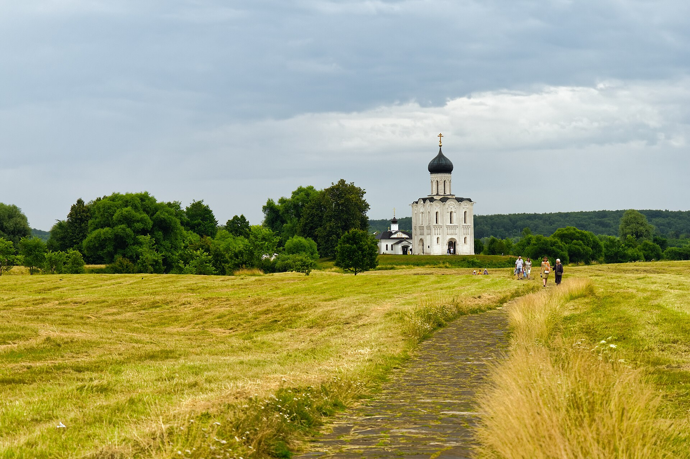
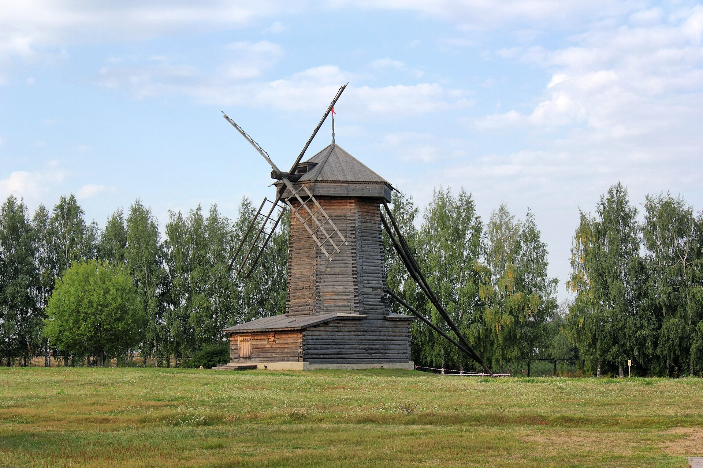
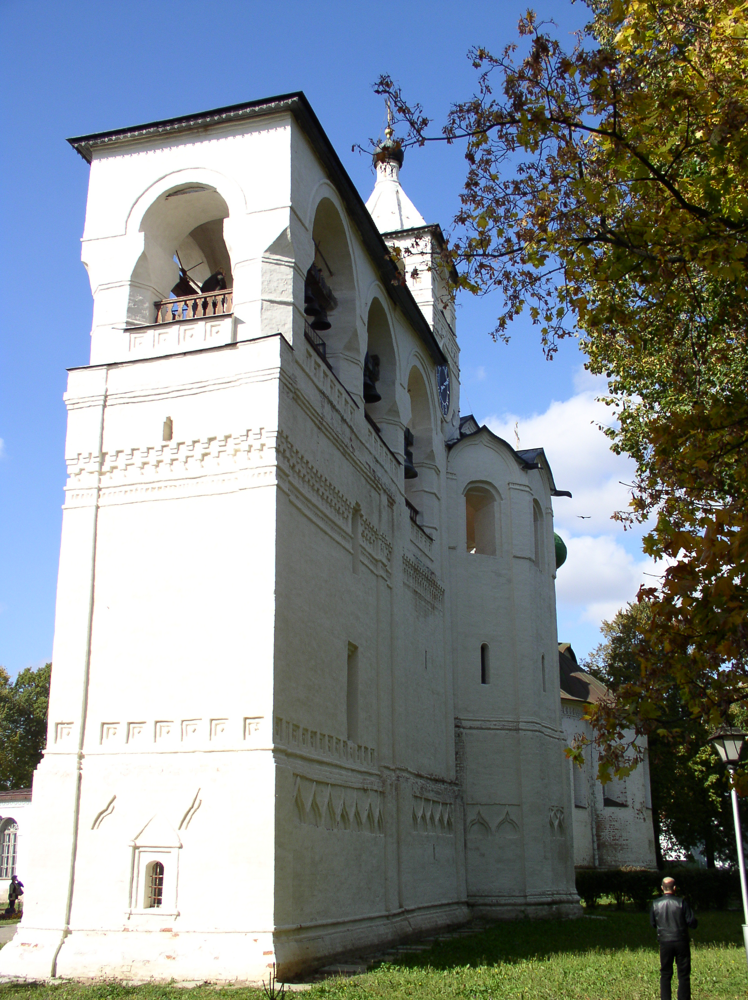
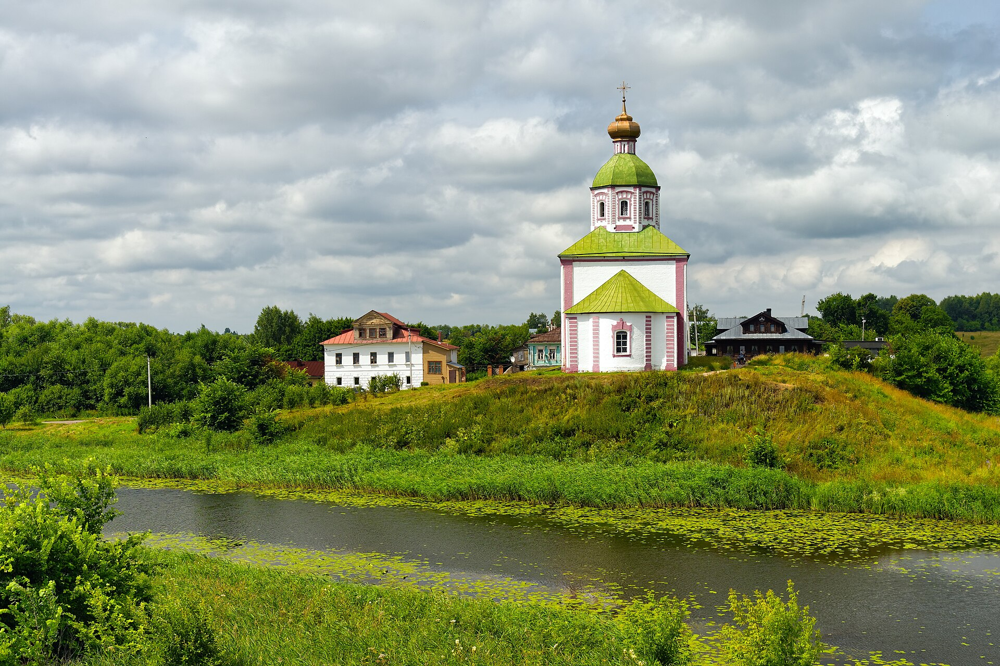
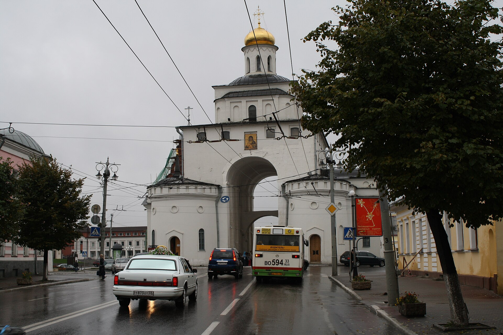
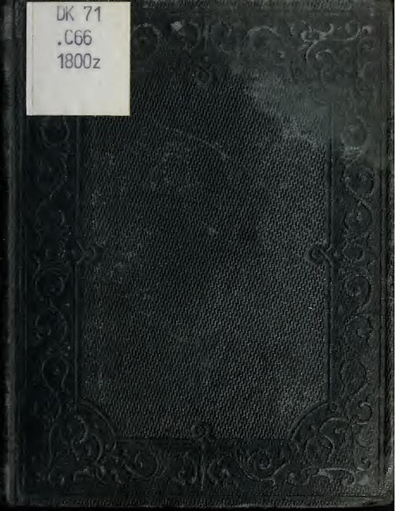

Перед Поездкой
Туда лучше выехать из Москвы около 9 утра, сделать компактный Владимир и Боголюбово, в Суздале ходить пешком, обратно выехать через Кидекшу. Даты: пятница 15 мая - воскресенье 17 мая 2026.
Заявка в ресторан "Огурец" уже отправлена на 16 мая 2026, 8 человек, на имя Александр, желаемое время 19:30. Бронь станет окончательной после ответа ресторана.
- За 3-5 дней проверить часы Владимиро-Суздальского музея-заповедника: vladmuseum.ru.
- Если хотите закрыть три главных музейных комплекса, удобен единый билет: Кремль, Музей деревянного зодчества, Спасо-Евфимиев монастырь.
- В Суздале машина нужна мало: центр удобнее пройти пешком, парковку лучше держать у гостиницы или у больших музейных зон.
- По дороге из Москвы включить навигатор утром: платные участки М-12/ЦКАД часто быстрее, М-7 бесплатнее, но чаще собирает пробки.
15 Мая, Пятница
При таком старте Владимир смотрим компактно, без длинного музейного блока. Закладывайте 3-4 часа чистой дороги плюс пятничный трафик.
Рекомендация: "Пшеничный Кот" в центре. Удобен для спокойного обеда и десертов.
Золотые ворота, Георгиевская улица, смотровые площадки, Успенский собор, Дмитриевский собор, Соборная площадь. Водонапорную башню оставить только если есть силы и время.
От парковки идти около 1,5 км по лугу. Это одна из самых красивых остановок маршрута, особенно при мягком майском свете.
Без спешки въехать в город и оставить машины у жилья.
Коротко выдохнуть после дороги.
Торговые ряды, Кремлевская улица, берег Каменки, виды на Ильинский луг и вечерние фото у Кремля.
Варианты: "Лепота" или "Гостиный двор", так как "Огурец" запрошен на 16 мая.
Дегустационный зал медовухи или караоке в ГТК "Суздаль".
16 Мая, Суббота
Если не включен в гостинице: "Гнездо Пекаря", ул. Ленина, 63а.
Территория Кремля, Рождественский собор, Архиерейские палаты, Никольская деревянная церковь.
"Трапезная" в Кремле, ул. Кремлевская, 12: удобно между Кремлем и Музеем деревянного зодчества.
Мельницы, деревянные церкви, крестьянские дома, амбары на сваях, виды на Каменку.
Спокойное и фотогеничное место после музея под открытым небом.
Перед ужином лучше не геройствовать: день плотный.
Заявка отправлена: 8 человек, Александр. Если ресторан ответит другим временем, маршрут легко сдвинуть на 30-60 минут.
Баня в "Пушкарской слободе" или городские бани, караоке/боулинг/бильярд в ГТК, либо спокойная прогулка по подсвеченному центру.
17 Мая, Воскресенье
Стены и башни, Спасо-Преображенский собор, звонница, аптекарский огород, музейные экспозиции.
"Гостиный двор" или "Гнездо Пекаря", если нужно быстро остаться у ул. Ленина.
Если открыт подъем, Преподобенская колокольня дает отличный финальный вид на Суздаль.
Церковь Бориса и Глеба - важный белокаменный памятник домонгольской архитектуры.
Ориентир прибытия: 19:00-21:00, в зависимости от пробок и платных участков.
Где Жить Восьмерым
Tripadvisor на запрос 15-17 мая 2026, 8 взрослых, 4 комнаты, Суздаль не вернул доступных вариантов, поэтому лучше смотреть дома и коттеджи напрямую. Приоритет: один дом на 8-10 человек, кухня/гостиная, парковка, баня или мангал.
Дом с 3 спальнями до 8 человек, 90 м², три санузла, общая кухня/обеденная зона. Пешком до нескольких монастырей, есть парковка, беседки, мангалы и баня. Сайт
Отдельный коттедж с баней: 10 спальных мест, 5 кроватей, 5 минут на машине до центра или 15-20 минут пешком. На сайте для 8 человек в пятницу-воскресенье указано 15 000 руб./сутки. Сайт
Весь дом на 10 человек, общая кухня, бесплатная парковка, баня/сауна и бассейн с прохладной водой. Хорошо для общих вечеров. Сайт
Стильные гостевые дома в центре Суздаля, консьерж, утренний сервис, кейтеринг и банные программы для отдельных домов. Нужно подобрать конкретный дом по датам. Сайт
Деревянный дом на 8 человек, сдается полностью; сад, русская баня, барбекю-зона на 8 мест, завтраки включены. Проверить актуальность обязательно. Сайт
Загородный курортный вариант: в прайсе на май 2026 есть коттедж "Запольский" до 8 человек за 110 000 руб. минимум на 2 суток, с завтраком, бассейном и саунами. Прайс
Мой короткий выбор: "Желтые Звезды" для центра и комфорта ровно на 8, "У Ольги" для отдельного дома с баней и разумной ценой, "Дымов Дача" для красивого сервисного варианта.
Где Есть
Суздаль, ул. Ленина, 121. Фермерская русская кухня. Главный ужин 16 мая, заявка на бронь отправлена.
Суздаль, ул. Ленина, 63а. Завтрак/ужин, выпечка, маленький зал.
Суздаль, ул. Ленина, 63А. Удобно у Торговых рядов, русская кухня.
Суздаль, ул. Кремлевская, 12. Логичный обед в музейный день.
Суздаль, ул. Ленина, 45 к1. Вечернее настроение, живая музыка.
Владимир, Большая Московская, 19. Удобный обед в центре.
Веселое И Вечернее
Фотографии
Все изображения лежат рядом с этим файлом: папки фотографии и развлечения. Источники сохранены в источники_фото.tsv.






QR-Код
Отсканируйте, чтобы открыть этот маршрут на телефоне.
Короткая ссылка: https://is.gd/suzdalroute2026